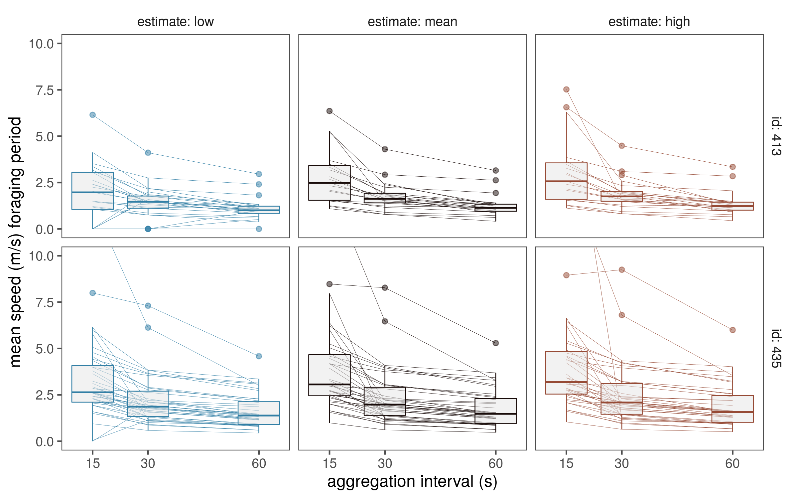
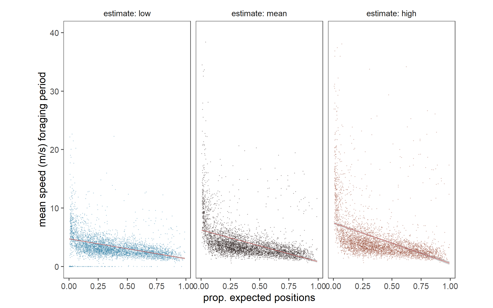
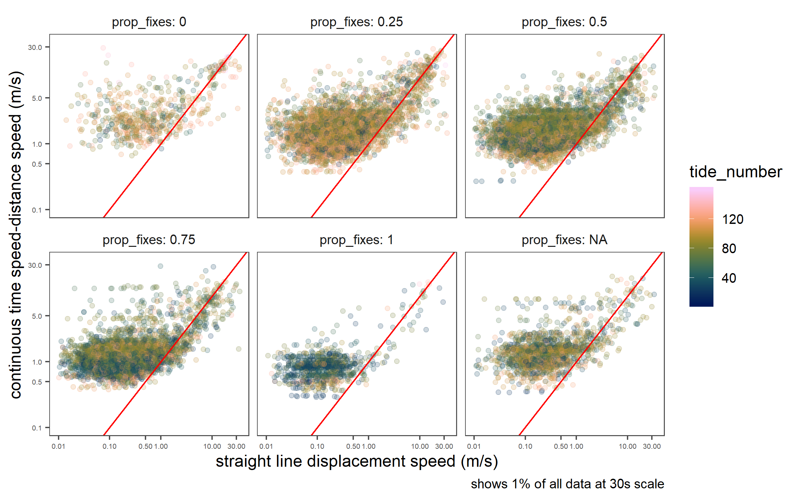

3 Applying CTMM to WATLAS data
Here, we examine the effect of different aggregation scales on CTMM fits and speed estimates.
3.1 Load libraries
3.2 Load prelim data
# load data
# make a list of data files to read
data_files <- list.files(path = "data/watlas", pattern = "whole_season*", full.names = TRUE)
data_ids <- str_extract(data_files, "(tx_\\d+)") %>% str_sub(-3,-1)
# read deployment data from local file in data folder
tag_info <- fread("data/SelinDB.csv")
# filter out NAs in release date and time
tag_info <- tag_info[!is.na(Release_Date) & !is.na(Release_Time),]
# make release date column as POSIXct
tag_info[,Release_Date := as.POSIXct(paste(Release_Date, Release_Time, sep = " "),
format = "%d.%m.%y %H:%M", tz = "CET")]
# sub for knots in data
data_files <- data_files[as.integer(data_ids) %in% tag_info$Toa_Tag]
data_ids <- str_extract(data_files, "(tx_\\d+)") %>% str_sub(-3,-1)3.3 Choose scales of aggregation
3.4 Transfer data and process on cluster
# read password
password = fread("data/password.txt")$password
# transfer code files
{
s <- ssh_connect("p284074@peregrine.hpc.rug.nl", passwd = password)
rfiles <- list.files("code", pattern = ".r", full.names = TRUE)
scp_upload(s, rfiles, to = "code/")
ssh_disconnect(s)
}
# clear old speed estimates
{
s <- ssh_connect("p284074@peregrine.hpc.rug.nl", passwd = password)
ssh_exec_wait(s, command = "rm output/speed_estimates_2018.csv")
ssh_disconnect(s)
}
# execute tests
for(i in 1:nrow(data_to_test)){
scale <- data_to_test$scales[i]
file <- data_to_test$data_files[i]
id <- data_to_test$data_ids[i]
# connect to peregrine
s <- ssh_connect("p284074@peregrine.hpc.rug.nl", passwd = password)
# make directory if non-existent
ssh_exec_wait(s, command = "mkdir -p data/watlas")
# list files already present
files_on_prg <- ssh_exec_internal(s, command = "ls data/watlas")
files_on_prg <- rawToChar(files_on_prg$stdout) %>%
str_split("\n") %>%
unlist()
# check name
data_name <- file %>%
str_split("/") %>%
unlist() %>% .[3]
if(!data_name %in% files_on_prg){
# upload data file for processing
scp_upload(s, file, to = "data/watlas")
}
# make job file
{
shebang <- readLines("code/template_job.sh")
# rename job
shebang[2] <- glue('#SBATCH --job-name=ctmm_{file}')
text <- glue('Rscript --vanilla code/code_test_ctmm_scale.r {file} {scale}')
jobfile <- glue('code/job_ctmm_{id}_{scale}.sh')
writeLines(c(shebang, text), con = jobfile)
scp_upload(s, jobfile, to = "code/")
}
ssh_exec_wait(s, command = glue('dos2unix {jobfile}'))
# process using ctmm
ssh_exec_wait(s, command = glue('sbatch {jobfile}'))
# disconnect
ssh_disconnect(s)
}3.5 Get speed estimates from cluster
# access data from cluster
{
s <- ssh_connect("p284074@peregrine.hpc.rug.nl", passwd = password)
scp_download(s, files = "output/speed_estimates_2018.csv", to = "data/mod_output/")
ssh_disconnect(s)
}
# read data and process for plotting
{
data <- fread("data/mod_output/speed_estimates_2018.csv", fill = T)
data <- setDF(data) %>%
as_tibble() %>%
filter(!is.na(id)) %>%
rename(mean = est) %>%
pivot_longer(cols = c(low, mean, high),
names_to = "estimate", values_to = "speed") %>%
filter(!is.infinite(speed)) %>%
mutate(estimate = as.factor(estimate),
estimate = fct_relevel(estimate, "low", "mean", "high"))
}3.5.1 Plot speed at different scales
# plot data as lines
fig_compare_ctmm <- ggplot(data)+
geom_line(aes(x = tide_number, y = speed, group = interaction(id, tide_number),
col = factor(estimate)), size = 0.1)+
geom_boxplot(aes(x = scale, y = speed, group = interaction(scale),
col = factor(estimate)), size = 0.3, notch = F,
fill = "grey90", alpha= 0.5)+
facet_grid(id~estimate, labeller = label_both)+
scale_x_continuous(breaks = c(15,30,60))+
scale_colour_scico_d(palette = "berlin", begin = 0.2, end = 0.8)+
coord_cartesian(ylim = c(0,10))+
theme_few()+
theme(legend.position = "none")+
labs(x = "aggregation interval (s)", y = "mean speed (m/s) foraging period")
# save figure
ggsave(fig_compare_ctmm, filename = "figs/fig_compare_scale.png", height = 5, width = 8, dpi=300)
dev.off()

(#fig:show_fig_compare_scale_s01)Effect of aggregation scale on CTMM speed estimates, using 2 individual red knots over all tidal cycles in which they were tracked, and which satisfied quality criteria.
3.5.2 Plot speed in relation to proportion of positions
# figure speed estimate ~ quality
fig_speed_quality <-
ggplot(data %>% filter(speed <= 5))+
geom_jitter(aes(x = prop_fixes, y = speed, group = id,
col = factor(estimate)), size = 0.1, alpha = 0.5)+
geom_smooth(aes(x = prop_fixes, y = speed,
col = factor(estimate)), alpha = 0.5,
method = "lm")+
# geom_boxplot(aes(x = scale, y = speed, group = interaction(scale),
# col = factor(estimate)), size = 0.3, notch = F,
# fill = "grey90", alpha= 0.5)+
facet_grid(scale~estimate, labeller = label_both, ncol = 3)+
# scale_x_continuous(breaks = c(15,30,60))+
scale_colour_scico_d(palette = "berlin", begin = 0.2, end = 0.8)+
coord_fixed(ylim = c(0,5), ratio = 0.1)+
theme_few()+
theme(legend.position = "none")+
labs(x = "prop. expected positions", y = "mean speed (m/s) foraging period")
# save figure
ggsave(fig_speed_quality, filename = "figs/fig_speed_quality.png", height = 5, width = 8, dpi=300)
dev.off()

(#fig:show_fig_compare_qual_s01)Effect of proportion of positions realised on CTMM speed estimates.
3.6 Get instantaneous speed estimates
# download model data folder
{
s <- ssh_connect("p284074@peregrine.hpc.rug.nl", passwd = password)
scp_download(s, files = "output/mods", to = "data/mod_output/")
ssh_disconnect(s)
}
# list rdata files
speed_files <- list.files("data/mod_output/mods", pattern = "speeds", full.names = TRUE)
speed_30 <- str_extract_all(speed_files, pattern = regex("[0-9]+")) %>%
purrr::map(function(l) l[2] == "30")
speed_files <- speed_files[unlist(speed_30)]# read in griend
library(sf)
griend <- st_read("data/griend_polygon/griend_polygon.shp")
buffer <- griend %>% st_buffer(dist = 2000)
# read all data
data <- purrr::map_df(speed_files, function(df){
a <- fread(df)
setDF(a)
a <- a %>% select(id, tide_number, x,y,est,time) %>%
filter(is.finite(est)) %>%
rename(tag = id)
return(a)
})
tags <- unique(data$tag)[1:10]
# plot inviduals per tide
fig_speed_example <- ggplot(data %>% filter(tag %in% tags, tide_number == 35))+
geom_sf(data = griend)+
geom_path(aes(x, y, col = est, group = tide_number))+
geom_point(aes(x, y, col = est, group = tide_number))+
facet_wrap(~tag, labeller = label_both)+
theme_few()+
#scale_size_manual(values = c(0.2, 0.1), guide = F)+
scale_colour_scico(palette = "hawaii", limits = c(0, 5), na.value = "red", direction = -1)+
theme(axis.text = element_blank())+
coord_sf(xlim = st_bbox(buffer)[c(1,3)], y = st_bbox(buffer)[c(2,4)])+
labs(x=NULL, y = NULL, col = "speed m/s")
# save figure
ggsave(fig_speed_example, filename = "figs/fig_speed_example.png", height = 12, width = 12, dpi=300)
dev.off()3.7 Comparing SLD and CTMM
# get sld comparison
data <- group_by(data, tag, tide_number) %>%
group_split(data) %>%
purrr::map(function(df){
df <- mutate(df, sld = watlasUtils::wat_simple_dist(df, "x", "y"))
df <- mutate(df, sld = sld/(as.numeric(diff(time))))
return(df)
})
data <- bind_rows(data) %>%
sample_frac(0.01)
# read tide wise speed summary and add prop fixes to data
speed_summary <- fread("data/mod_output/speed_estimates_2018.csv")
data <- left_join(data, speed_summary %>% select(id, tide_number, prop_fixes),
by = c("tag" = "id", "tide_number"))
# round prop fixes to 0.25
data <- mutate(data, prop_fixes = plyr::round_any(prop_fixes, 0.25))
# plot sld comparison
fig_sld_ctmm_comapre <- ggplot(data %>% filter(est > 0, sld > 0))+
geom_point(aes(x = sld, y = est, col = tide_number), alpha = 0.2)+
geom_abline(slope = 1, intercept = 0, col = "red")+
# coord_cartesian(ylim = c(0, 35), xlim = c(0,35))
scale_x_log10(limits = c(0.01, 35), breaks = c(0.01,0.1, 0.5, 1.0, 10.0,30))+
scale_y_log10(limits = c(0.1, 35), breaks = c(0.1, 0.5, 1.0, 5.0, 30))+
labs(x = "straight line displacement speed (m/s)",
y = "continuous time speed-distance speed (m/s)",
caption = "shows 1% of all data at 30s scale")+
#coord_fixed(ratio=0.8)+
scale_colour_scico(palette = "batlow")+
facet_wrap(~prop_fixes, labeller = label_both)+
theme_few()+
theme(panel.grid.minor = element_blank(),
axis.text = element_text(size = 5))
ggsave(fig_sld_ctmm_comapre,
filename = "figs/fig_sld_ctmm_prop_fixes.png", height = 5, width = 8, dpi=300)
dev.off()

(#fig:show_fig_speed_map)Instantaenous speeds visualised